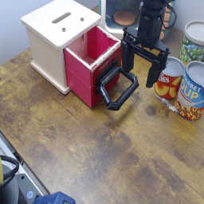
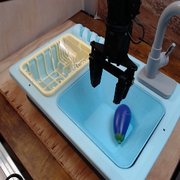

AutoEval is an evluation service that evaluates generalist robot policies in the real world, currently with two widowx robots and four different tasks. Users can submit policies through an online dashboard, and get back detailed evaluation report (success rates, videos, etc.) after the evaluation job is done.
The currently publically available tasks are:


python policy_server.py. This will set up your policy server on your
localhost.With ngrok:
ngrok http 8000
With bore.pub:
bore local 8000 --to bore.pub
Note: If you aren't able to resolve bore.pub's DNS (e.g. if ping bore.pub fails), you can use their actual IP:
bore local 8000 --to 159.223.171.199